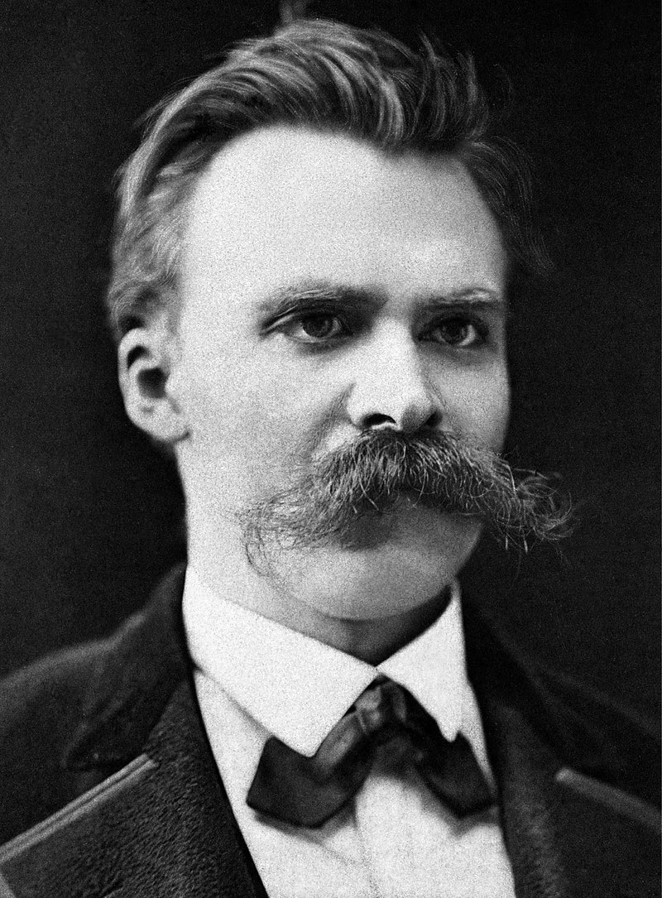

簡介
弗德里希·威廉·尼采，1844年10月15日－1900年8月25日，是出身德國的古典語言學家和哲學家。
他最初是普魯士公民，1869年移居瑞士的巴塞爾後，他應自己的要求成為無國籍人。
他也以創作詩歌和音樂作品為副業。
下圖為尼采出生地:
弗德里希·威廉·尼采，1844年10月15日－1900年8月25日，是出身德國的古典語言學家和哲學家。
他最初是普魯士公民，1869年移居瑞士的巴塞爾後，他應自己的要求成為無國籍人。
他也以創作詩歌和音樂作品為副業。
下圖為尼采出生地:

尼采對20世紀的哲學留下深刻的影響，他企圖揭發社會的既有價值觀的本質，並指出人的動物本性和欲望在型塑人類行為上扮演的角色這一點，這也大為影響後來的心理學家如西格蒙德·弗洛伊德和卡爾·榮格。
同時他深深影響後來的存在主義，他所提出的「上帝已死」日後成了存在主義的中心論點，如果沒有上帝，那麼就沒有必然的價值或道德律，如果沒有必然的價值或道德律，那麼人類應該如何自處。